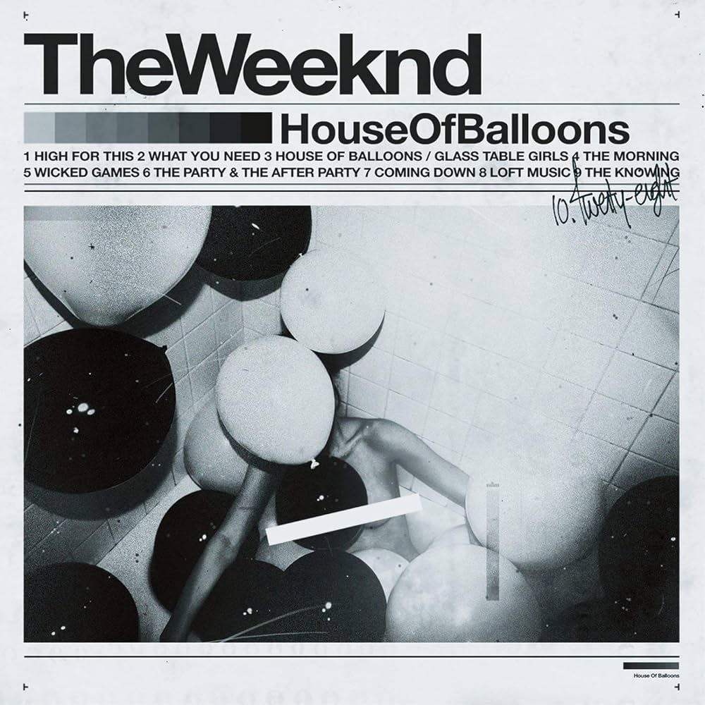
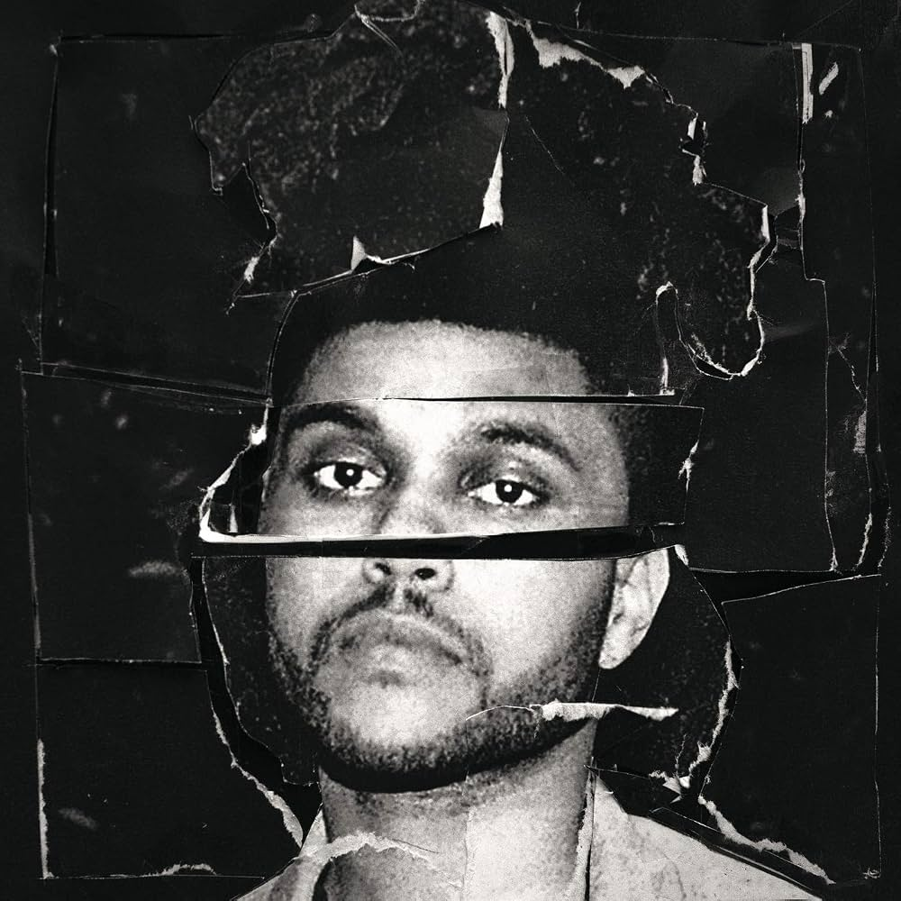
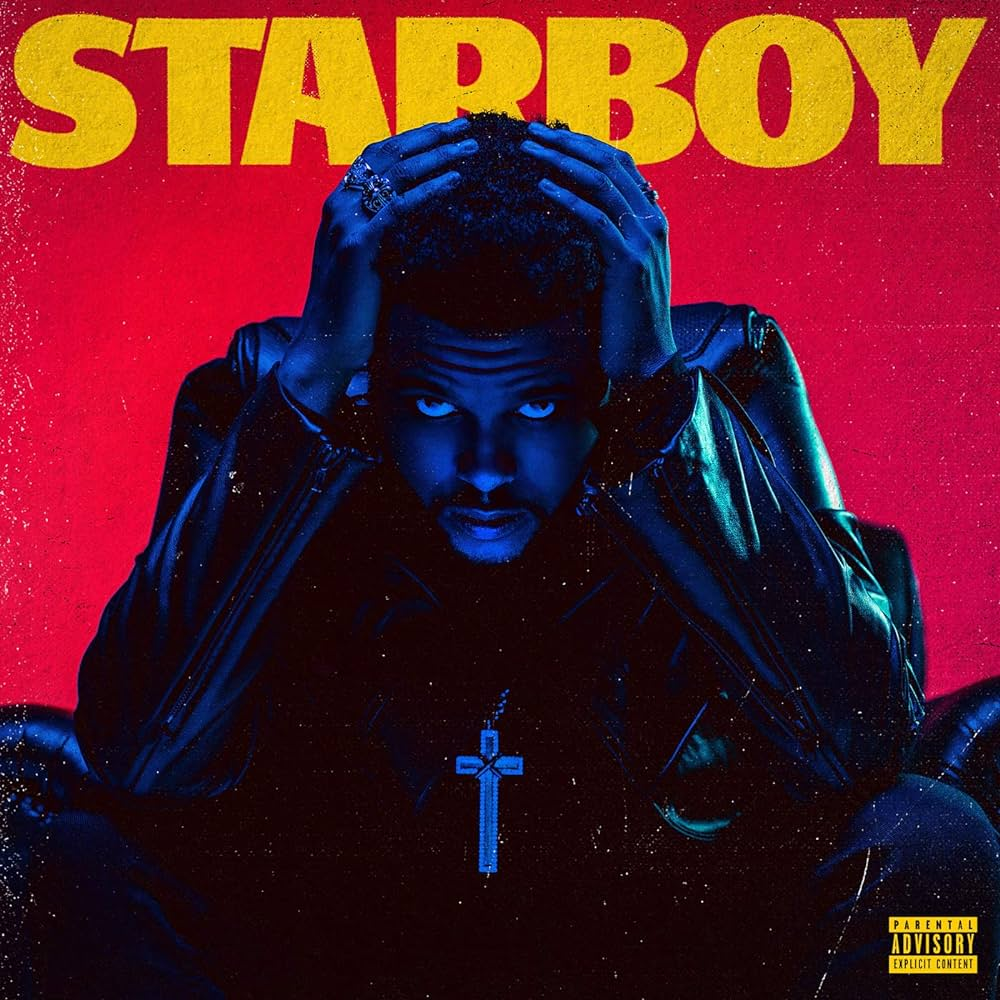

House of Balloons was The Weeknd's debut mixtape. It introduced his dark and atmospheric R&B sound and helped establish his identity as an artist.
Listen to House of Balloons
This album helped The Weeknd become a global superstar. It includes songs such as "Can't Feel My Face", "The Hills", and "Earned It".
Listen to Beauty Behind the Madness
Starboy showed The Weeknd moving toward a more pop and electronic sound. The title track features Daft Punk and became one of his biggest hits.
Listen to Starboy